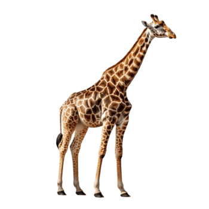

- history
- habitat
- diet
- friends
Giraffes (genus Giraffa) are large African hoofed mammals. They are the tallest living terrestrial animals and the largest ruminants on Earth. They are classified under the family Giraffidae, along with their closest extant relative, the okapi. Traditionally, giraffes have been thought of as one species, Giraffa camelopardalis, with nine subspecies. Most recently, researchers proposed dividing them into four extant species, with seven subspecies, which can be distinguished morphologically by their fur coat patterns. Six valid extinct species of Giraffa are known from the fossil record.
